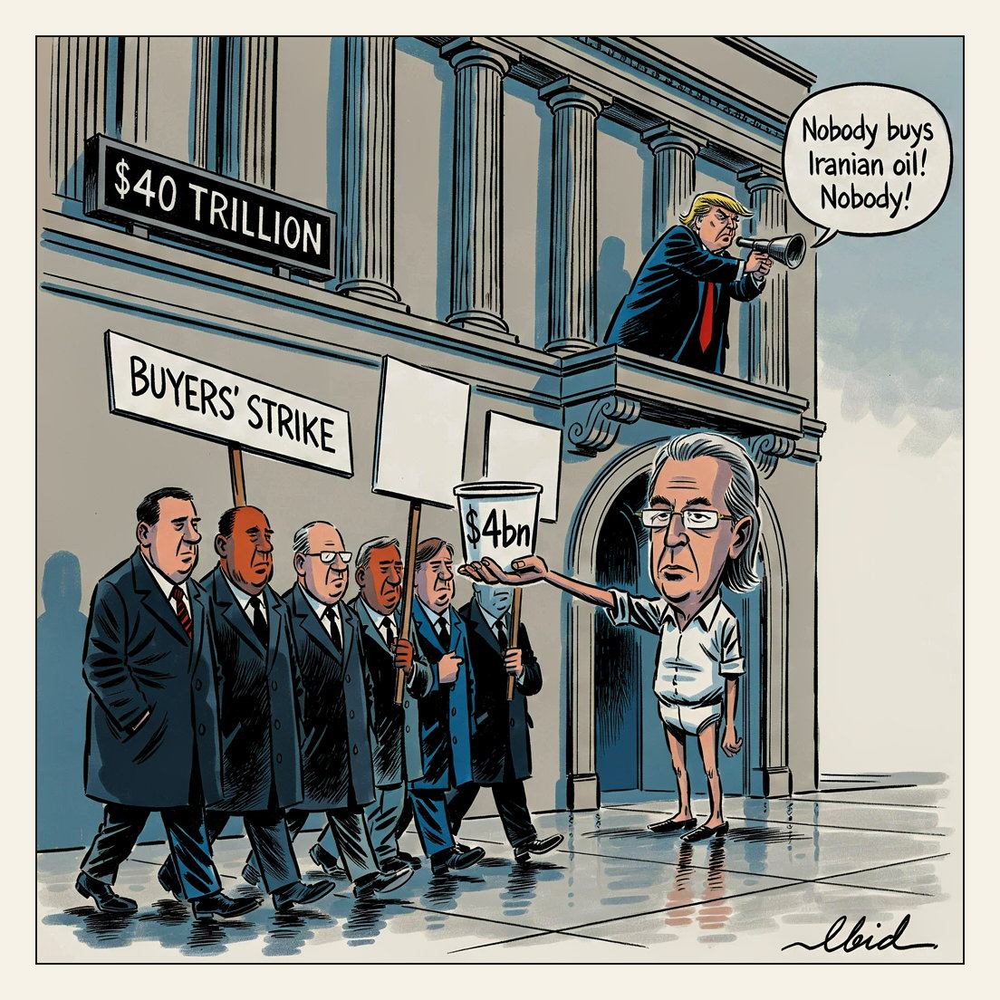

The blockade is working.
Secondary Sanctions

US markets fell after President Trump threatened Iran with an 'economic D-Day', the Dow closing down 703.84 points as 30-year Treasury yields pushed above 5.25%. Treasury Secretary Scott Bessent made an emergency move doubling buybacks of long-dated debt to at least $4bn, which failed to calm markets, with analysts describing a 'buyers' strike' in long-dated Treasuries running since June. Total US debt passed $40 trillion for the first time this week, two years earlier than expected, while Brent topped $93 a barrel and the Strait of Hormuz remained shut.